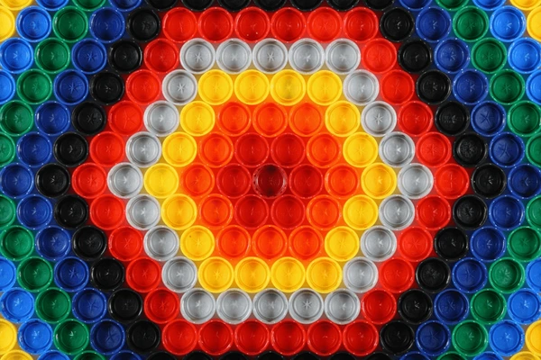
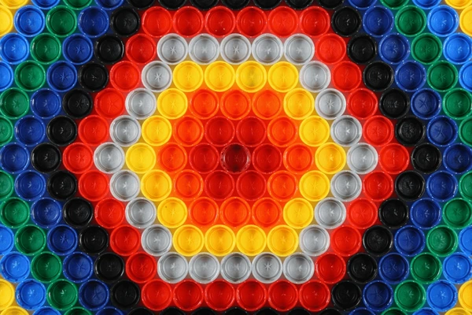
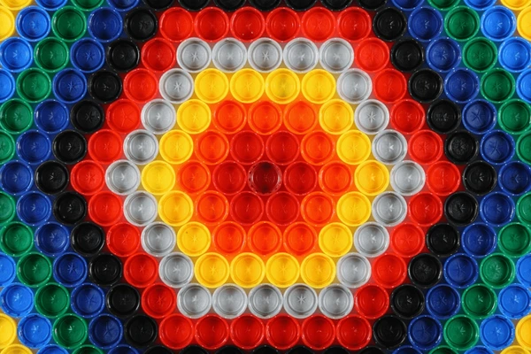

Recycled Wonders – Turning Plastic into Art
Transforming everyday plastic waste into creativity and sustainability.
 

Transforming everyday plastic waste into creativity and sustainability.

This hands-on project empowers students to transform plastic waste into functional art and eco-friendly solutions. By building creative projects like bird feeders, greenhouses, benches, and artistic installations, students learn sustainability while enhancing the school environment.
To transform plastic waste into beautiful, meaningful art, inspiring a sustainable future where creativity meets environmental responsibility, and communities embrace recycling as a way of life.
To reduce plastic waste by giving it a new life as art, raise awareness about environmental sustainability, and inspire individuals to adopt creative, eco-friendly practices in their daily lives.
To creatively transform discarded plastic into inspiring art pieces, educate communities about recycling, and promote sustainable practices through hands-on engagement and awareness campaigns.
Reduces environmental pollution, educates communities on sustainable practices, and fosters creativity and social engagement, inspiring a culture of recycling and eco-consciousness.
This project connects multiple subjects: understanding recycling and ecology, cost-benefit analysis of upcycling, writing reflections, and even web or CAD design!

“I never thought plastic bottles could become something so beautiful and useful!â€â€“ Ritwik, Grade 7

“Working as a team made the project fun and taught us about the environment.â€â€“ Sarvesh, Grade 8
Learn more, contribute ideas, or start your own recycled art project!
Start Your Project Learn More About Recycling